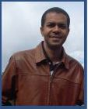
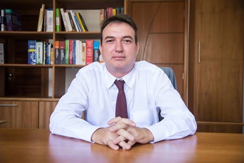
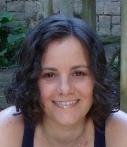
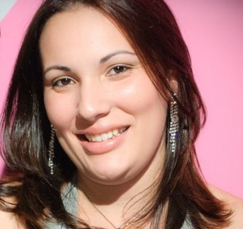
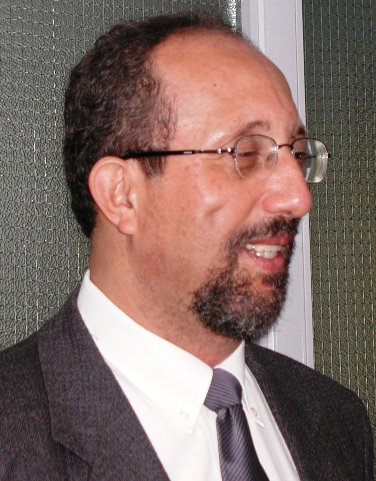
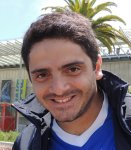

Corpo Docente
- Alexandre Neves Louzada (Mestre) 
- Anderson Silva do Nascimento (Mestre)
- Daniel de Oliveira (Doutor)
- Eduardo dos Santos Pereira (Especialista) 
- Flávio Dumortout de Mendonça Júnior (Mestre)
- Joao Francisco de Oliveira Antunes (Mestre)
- João Paulo Baptista Voigtlaender (Especialista)
- José Luiz Thomaselli Nogueira (Doutor)
- Luciene Cristina Soares Motta (Doutor) 
- Luiz Fernando Teixeira de Farias (Mestre)
- Marco Antonio de Melo Britto (Doutor)
- Miguel Gabriel Prazeres de Carvalho (Mestre)
- Natalia Joana Silva de Oliveira (Especialista) 
- Pedro Vieira do Nascimento (Mestre) 
- Thiago Silva de Souza (Doutor) 